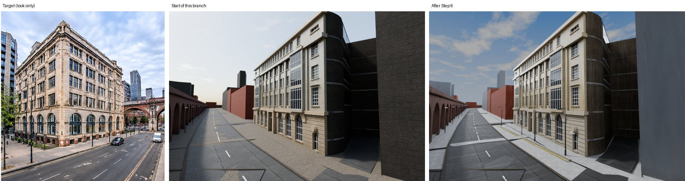
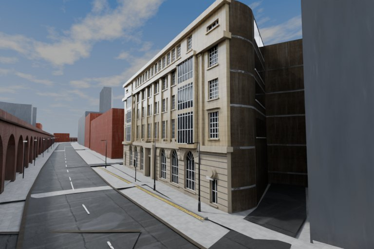
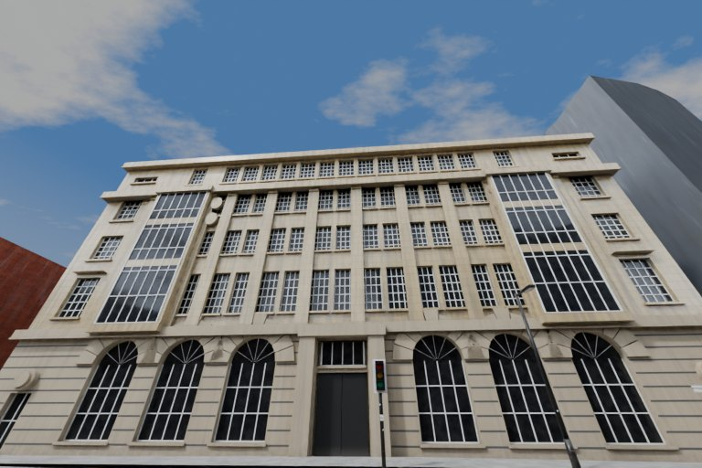
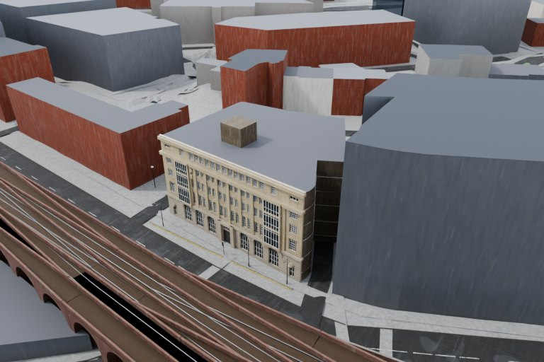
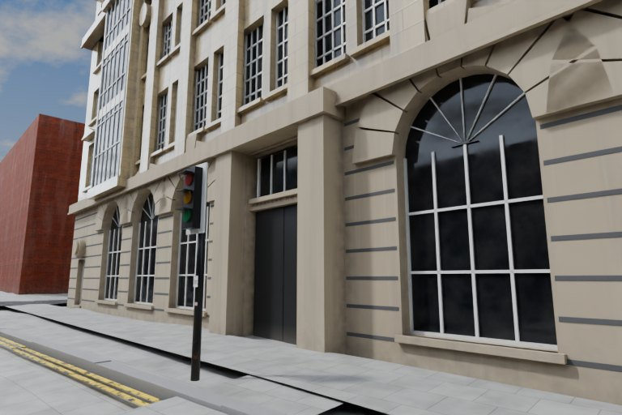
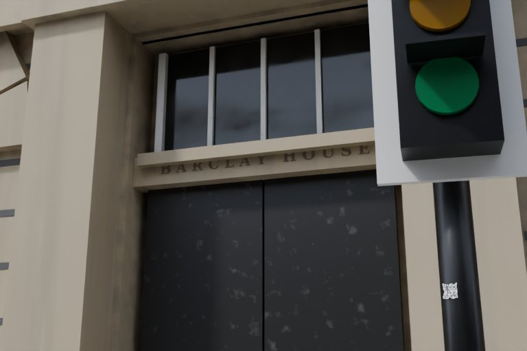
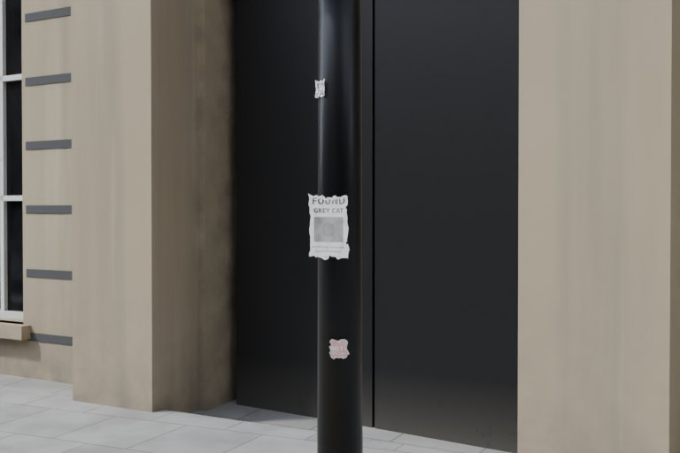

Barclay House exterior
Blender renders from the exterior 7-step pass (Whitworth Street West, Manchester). Open the 3D viewer
6 seconds: camera push-in on the corner, drifting cloud, a car and a van passing, the signal changing, and one lamp left burning and flickering. The car and van are simple blockouts.
Target, start, and now

Views





